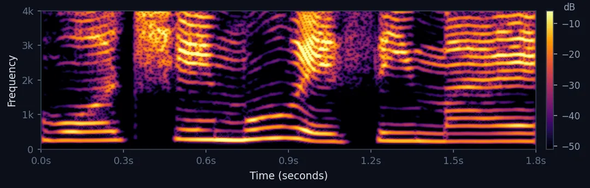
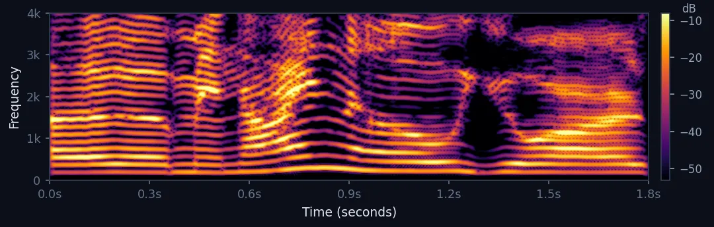
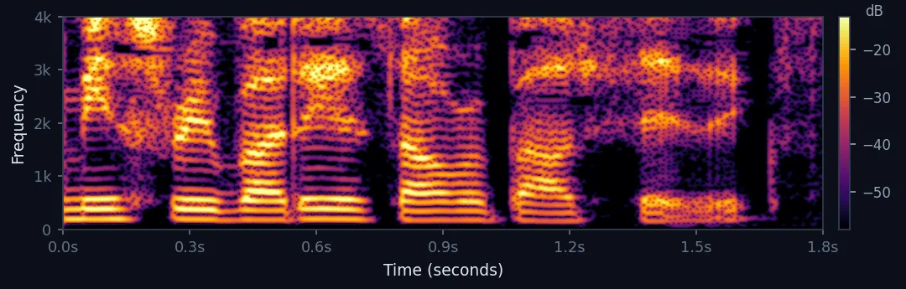
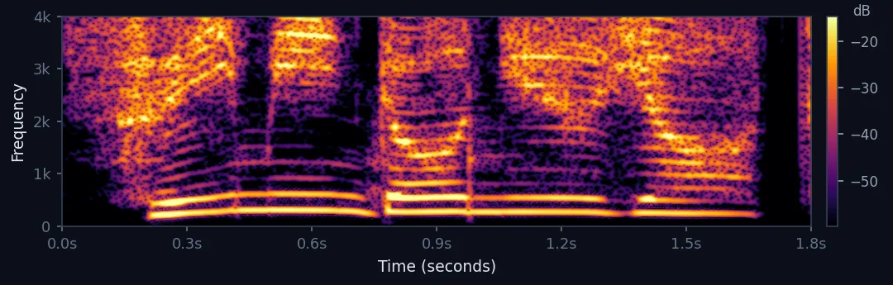
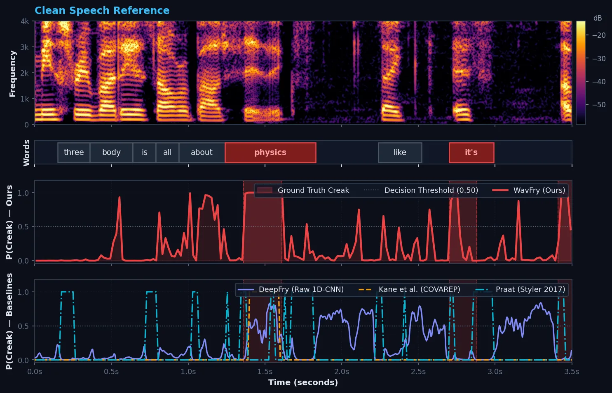

WavFry: Noise-Robust Phonation Detection and Representation Auditing in Conversational Speech
1. Phonation Types & Acoustic Spectrograms
Synchronized 0–4 kHz narrowband spectrograms across four prototypical glottal phonation regimes in conversational speech.
Modal Voice (Female) [Reference]
Regular periodic voicing (F0 ≈ 252 Hz).

Modal Voice (Male) [Reference]
Dense harmonic structure across formants (F0 ≈ 190 Hz).

Creaky Voice / Vocal Fry [Target Event]
Vocal fry on "physics" with period doubling.

Breathy Voice [Target Event]
Incomplete glottal closure with aspiration noise (> 1.5 kHz).

2. Acoustic Degradation & Continuous Detection Matrix
Continuous boundary localization across 5 noise scenarios (15, 5, 0 dB SNR) and compound reverberation. Click any cell or play audio to inspect Figure 2.
| Acoustic Scenario | Mild (15 dB SNR) | Moderate (5 dB SNR) | Severe (0 dB SNR) |
|---|---|---|---|
| Cafeteria / Restaurant Babble & cutlery noise |
Cafe 15 dB3.50s
|
Cafe 5 dB3.50s
|
Cafe 0 dB3.50s
|
| Urban Street Traffic & engine noise |
Street 15 dB3.50s
|
Street 5 dB3.50s
|
Street 0 dB3.50s
|
| Vehicle Cabin Chassis & road rumble (<200 Hz) |
Car 15 dB3.50s
|
Car 5 dB3.50s
|
Car 0 dB3.50s
|
| Domestic Home Home ambient noise |
Home 15 dB3.50s
|
Home 5 dB3.50s
|
Home 0 dB3.50s
|
| Reverberant Space Room reflections & late reverb |
Reverb 15 dB3.50s
|
Reverb 5 dB3.50s
|
Reverb 0 dB3.50s
|
| Compound Degradation Conditions (Spatial RIR + 15 dB Additive Noise) | |||
| Vehicle Cabin Compound In-Car spatial RIR + 15 dB noise |
In-Car Spatial RIR Convolution + 15 dB Cabin Noise3.50s
|
||
| Room Reverberation Compound Large room RIR + 15 dB noise |
Room Reverberation Spatial RIR Convolution + 15 dB Reverb Noise3.50s
|
||

Figure 2: Synchronized 0–4 kHz narrowband spectrogram (top), manual word segmentation (middle, red indicates creak), and continuous creak posterior probabilities P(Creak) across models (bottom).